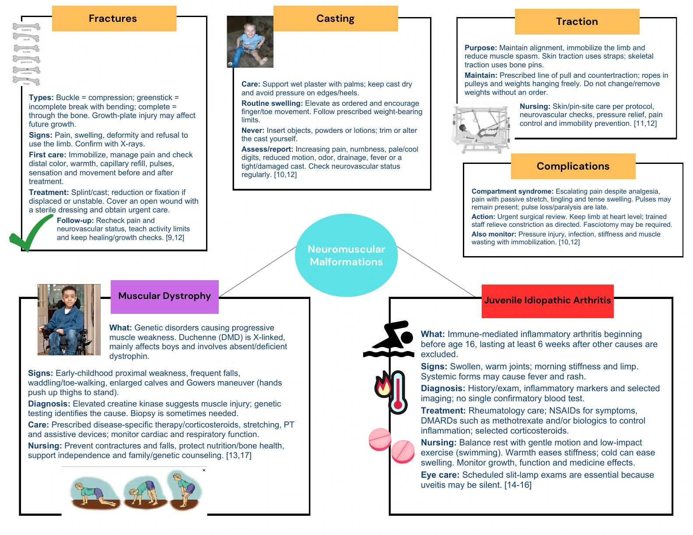

Scoliosis
- Lateral spinal curve with rotation.
- Uneven shoulders/hips; rib prominence on forward bend.
- Radiographs measure Cobb angle.
- Observation, brace or surgery depends on curve and growth.
- Brace adherence and skin checks; support body image.
🦴 Musculoskeletal · NUR 235 course collection
Completed maps with every original diagram. Switch to the original for blank practice.

Completed study notes · suggested additions
Exact extraction; text embedded inside pictures remains in the full-size original visual.
Slipped Capital Femoral Epiphysis Legg-Calve-Perthes Disease Craniosynostosis Clubfoot Developmental Dysplasia of the Hip (DDH) Torticollis PlagiocephalyScoliosis Musculoskeletal

Completed study notes · suggested additions
Exact extraction; text embedded inside pictures remains in the full-size original visual.
Neuromuscular Malformations Muscular Dystrophy Juvenile Idiopathic Arthritis Traction Fractures Casting Complications
Primary sources checked 10 October 2026. Existing course questions, answer slides, diagrams and notes remain intact.
Updated 3 November 2026. The completed PDF keeps both original pages and adds a reference page.
What: Sideways spinal curve with vertebral rotation. Adolescent idiopathic scoliosis often appears during a growth spurt.
Recognize: Uneven shoulders, waist or hips; rib prominence on the Adams forward-bend test. Often painless.
Diagnosis: Standing spinal X-rays measure the Cobb angle and guide follow-up.
Treatment: Depends on curve size, progression and remaining growth. Smaller curves are observed; bracing limits progression while growing; severe curves may need spinal fusion.
Typical thresholds: Observe below 25 degrees; brace about 25-45 degrees in a growing child; consider surgery above 45-50 degrees. Individual plans vary.
Nursing: Reinforce prescribed brace wear, check skin and fit, encourage activity allowed by the team, and support body image. Keep follow-up appointments. [1]
What: Tight/short sternocleidomastoid (SCM) muscle.
Signs: Head tilts toward the tight side; chin turns away. Limited neck motion; sometimes an SCM lump.
Assess: Neck motion, head shape and feeding; screen for associated DDH. Usually a clinical diagnosis.
Care: Early physical therapy, gentle taught stretches and varied awake positioning; supervised tummy time. Supine sleep.
Follow-up: Check symmetry and progress. New painful or acute torticollis needs evaluation for other causes. [2]
What: Positional skull flattening from external pressure; sutures remain open.
Signs: Flat occiput; ear/forehead may shift forward on that side. Assess torticollis.
Diagnosis: Clinical exam; assess for craniosynostosis if atypical or worsening.
Care: Vary awake positioning, supervised tummy time and PT if needed. Always supine for sleep; no positioning pillows.
Treatment: Helmet for selected persistent severe cases after specialist review. [3]
What: Premature fusion of one or more skull sutures.
Signs: Abnormal head shape; a firm suture ridge or altered head growth.
Care: Early craniofacial/neurosurgical referral; imaging as directed. Surgery often occurs in infancy. Monitor head growth and neurologic status; raised intracranial pressure is a risk. [4]
What: Congenital rigid foot deformity: foot turns inward and down, with a high arch and inward heel. Diagnosed by examination.
Treatment: Early Ponseti stretching and serial casts; often Achilles tenotomy, then boots-and-bar bracing for several years.
Nursing: Check toes, circulation and skin; keep casts dry. Brace adherence prevents relapse. Report swelling, cool toes or persistent pain. [5,10,12]
What: Shallow acetabulum with an unstable, subluxed or dislocated femoral head. Risks include breech position, family history and female sex.
Signs: Limited hip abduction, unequal leg length or later limp. Trained clinicians perform Barlow (provokes instability) and Ortolani (reduces a dislocated hip) maneuvers.
Diagnosis: Hip ultrasound in young infants; radiographs become useful as the femoral head ossifies.
Treatment: Pavlik harness in early infancy; reduction and hip-spica cast or surgery when indicated.
Nursing: Do not change prescribed strap settings. Check skin and leg movement/circulation, provide diaper/cast care and attend follow-up. Swaddle with hips free to flex and spread. [6]
What: Femoral head slips at the growth plate, usually during adolescence. Risks include obesity and endocrine disorders.
Signs: Limp, hip/groin/thigh or referred knee pain; outward-turned leg and reduced internal rotation.
Diagnosis: Hip/pelvis X-rays. Inability to bear weight indicates an unstable slip.
Priority: Stop weight bearing and obtain urgent orthopedic evaluation. Do not force hip movement.
Treatment: Surgical fixation; follow ordered activity limits and assess pain/neurovascular status. Watch for avascular necrosis and later arthritis. [7]
What: Temporary loss of femoral-head blood supply causes avascular necrosis, followed by repair. Usually ages 4-10, more often boys.
Signs: Limp with hip, thigh or knee pain; reduced abduction and internal rotation. Activity may worsen pain.
Diagnosis: Hip X-rays; follow imaging over the healing period.
Treatment: Maintain range of motion and contain the femoral head in the socket while it heals. Activity/weight-bearing limits, physical therapy, anti-inflammatory medication; selected casting, bracing or surgery.
Nursing: Support the prescribed mobility plan, avoid high-impact activity, reinforce follow-up and assess pain. Healing takes years; residual deformity can cause early arthritis. [8]
Types: Buckle = compression; greenstick = incomplete break with bending; complete = through the bone. Growth-plate injury may affect future growth.
Signs: Pain, swelling, deformity and refusal to use the limb. Confirm with X-rays.
First care: Immobilize, manage pain and check distal color, warmth, capillary refill, pulses, sensation and movement before and after treatment.
Treatment: Splint/cast; reduction or fixation if displaced or unstable. Cover an open wound with a sterile dressing and obtain urgent care.
Follow-up: Recheck pain and neurovascular status, teach activity limits and keep healing/growth checks. [9,12]
Care: Support wet plaster with palms; keep cast dry and avoid pressure on edges/heels.
Routine swelling: Elevate as ordered and encourage finger/toe movement. Follow prescribed weight-bearing limits.
Never: Insert objects, powders or lotions; trim or alter the cast yourself.
Assess/report: Increasing pain, numbness, pale/cool digits, reduced motion, odor, drainage, fever or a tight/damaged cast. Check neurovascular status regularly. [10,12]
Purpose: Maintain alignment, immobilize the limb and reduce muscle spasm. Skin traction uses straps; skeletal traction uses bone pins.
Maintain: Prescribed line of pull and countertraction; ropes in pulleys and weights hanging freely. Do not change/remove weights without an order.
Nursing: Skin/pin-site care per protocol, neurovascular checks, pressure relief, pain control and immobility prevention. [11,12]
Compartment syndrome: Escalating pain despite analgesia, pain with passive stretch, tingling and tense swelling. Pulses may remain present; pulse loss/paralysis are late.
Action: Urgent surgical review. Keep limb at heart level; trained staff relieve constriction as directed. Fasciotomy may be required.
Also monitor: Pressure injury, infection, stiffness and muscle wasting with immobilization. [10,12]
What: Genetic disorders causing progressive muscle weakness. Duchenne (DMD) is X-linked, mainly affects boys and involves absent/deficient dystrophin.
Signs: Early-childhood proximal weakness, frequent falls, waddling/toe-walking, enlarged calves and Gowers maneuver (hands push up thighs to stand).
Diagnosis: Elevated creatine kinase suggests muscle injury; genetic testing identifies the cause. Biopsy is sometimes needed.
Care: Prescribed disease-specific therapy/corticosteroids, stretching, PT and assistive devices; monitor cardiac and respiratory function.
Nursing: Prevent contractures and falls, protect nutrition/bone health, support independence and family/genetic counseling. [13,17]
What: Immune-mediated inflammatory arthritis beginning before age 16, lasting at least 6 weeks after other causes are excluded.
Signs: Swollen, warm joints; morning stiffness and limp. Systemic forms may cause fever and rash.
Diagnosis: History/exam, inflammatory markers and selected imaging; no single confirmatory blood test.
Treatment: Rheumatology care; NSAIDs for symptoms, DMARDs such as methotrexate and/or biologics to control inflammation; selected corticosteroids.
Nursing: Balance rest with gentle motion and low-impact exercise (swimming). Warmth eases stiffness; cold can ease swelling. Monitor growth, function and medicine effects.
Eye care: Scheduled slit-lamp exams are essential because uveitis may be silent. [14-16]